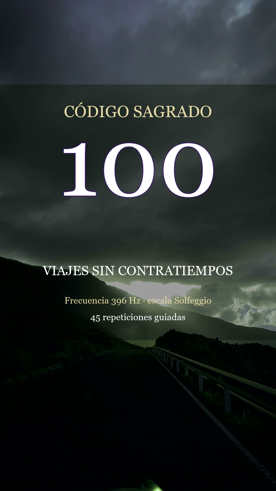

Código sagrado 100 · Viajes sin contratiempos
Activa conmigo el código sagrado 100 para viajar sin contratiempos y llegar bien a mi destino: 45 repeticiones guiadas con frecuencia de fondo de 396 Hz.
Míralo en YouTubeSíguenos en TikTokEscúchalo en SpotifyGuárdalo en Pinterest Frecuencia de fondo: Frecuencia 396 Hz · escala Solfeggio